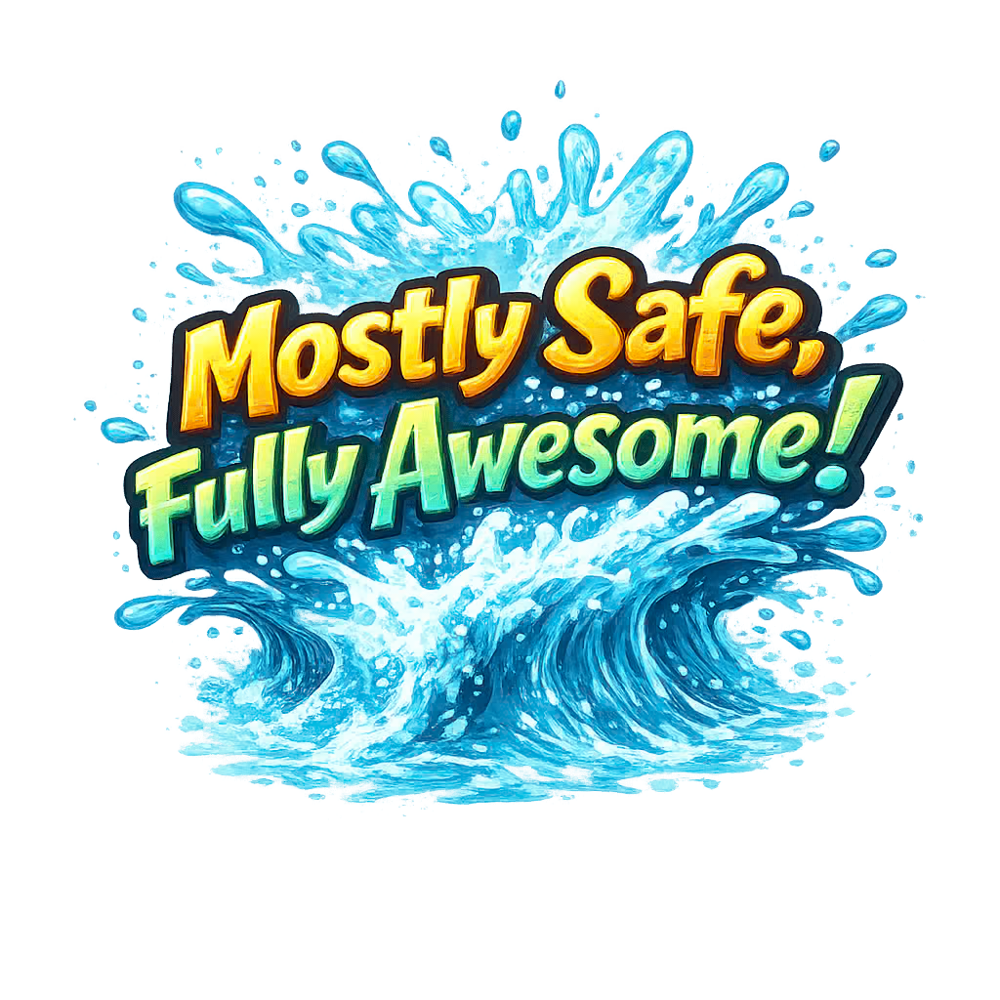
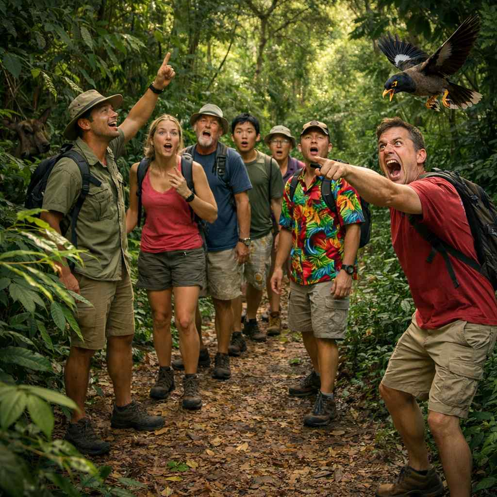
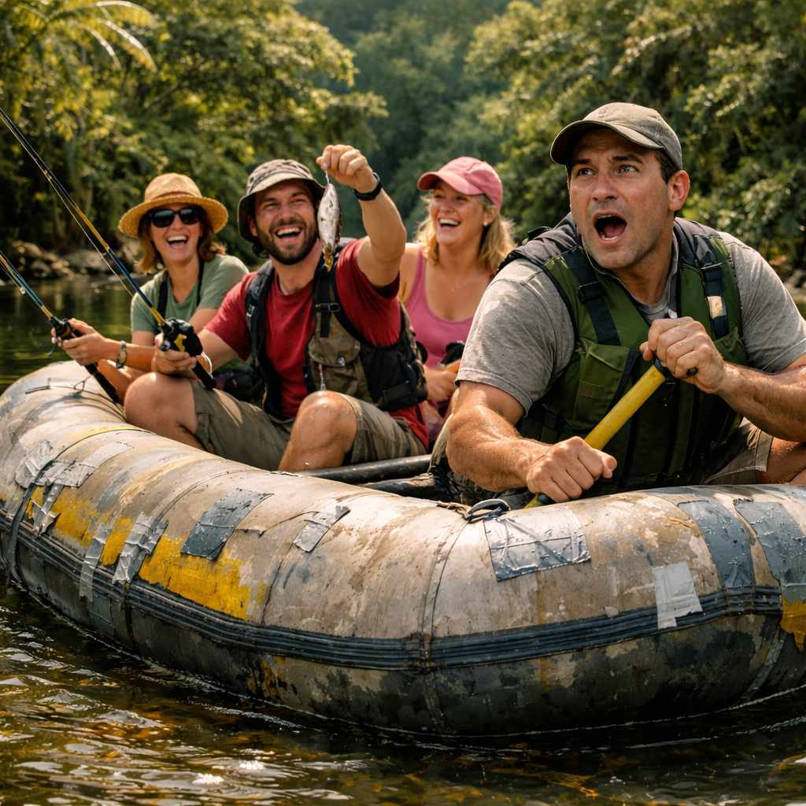
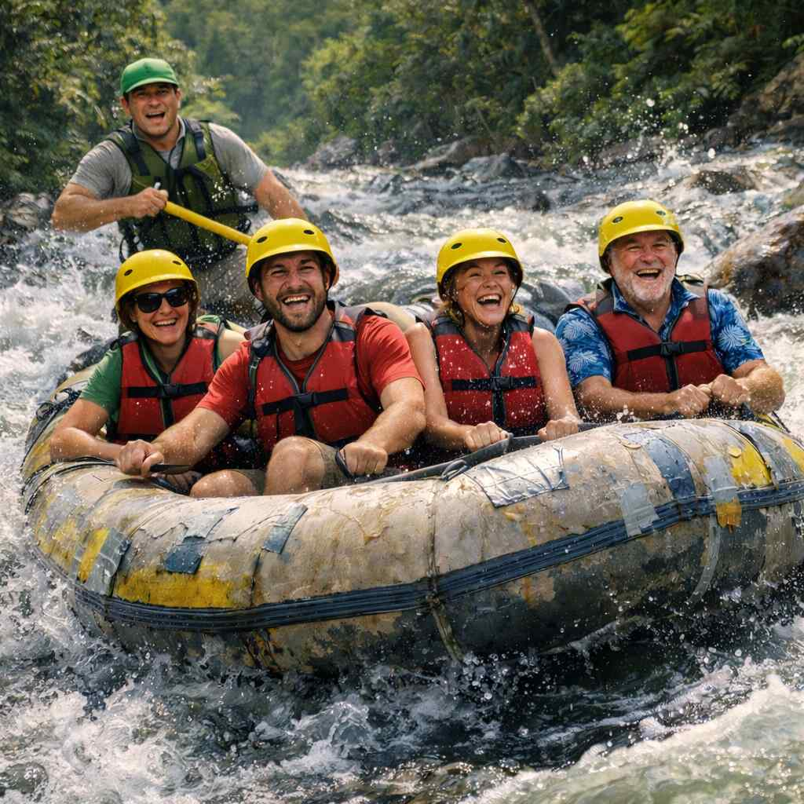
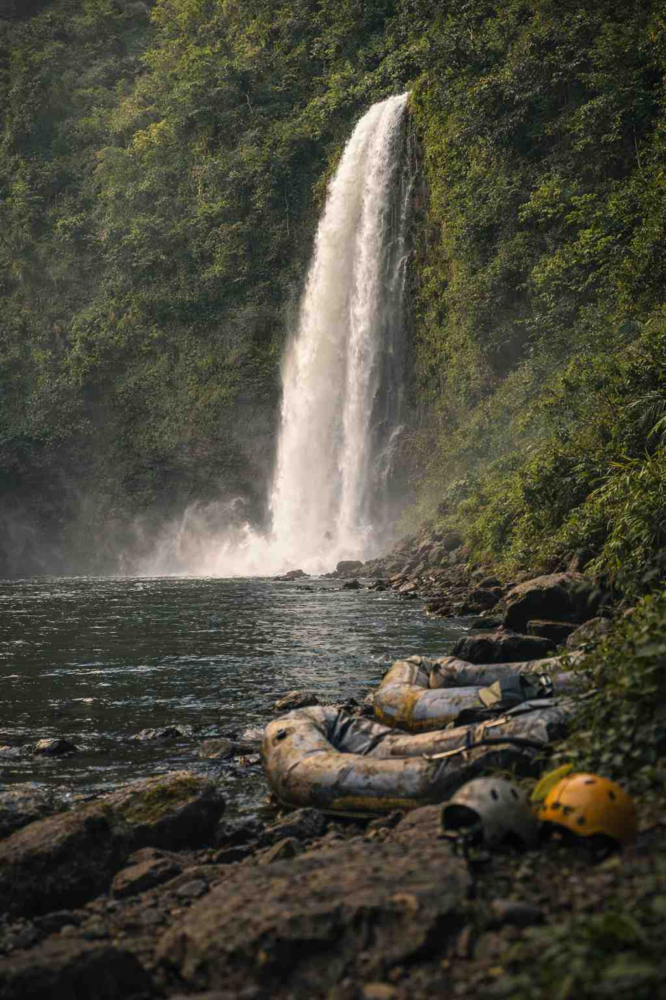

Brace Yourself For Adventure!





The river does not slow down for hesitation and the jungle does not soften itself for comfort, and while our guides know mostly what they are doing the wild does not care how confident you feel. You will get wet, you may get rattled, and you will absolutely be pushed beyond whatever calm little outing you imagined when you signed up. You've made it this far, the only question left is. "Are you O'opu enough?"
*Disclaimer: Adventure carries risk. Conditions change. You may get wet. Helmets are encouraged. Confidence is optional.*